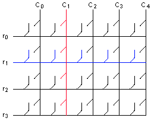
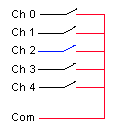
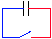
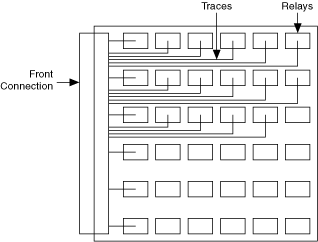
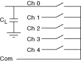
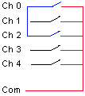
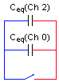

提交有关此主题的反馈。
提交有关此主题的反馈。 访问ni.com/support以获得技术支持。
访问ni.com/support以获得技术支持。单干簧片继电器的开路电容通常非常低（< 1 pF），并且在额定电压下切换时无法存储足够的能量来损坏继电器。开路继电器的电容大小与开关的拓扑结构、PCB 的布局以及连接到开关模块的负载直接相关。
具有长走线和许多连接继电器的拓扑（例如矩阵）具有比简单拓扑更高的电容。



大多数仪表开关在电路板上都有继电器阵列，一侧有连接器。所有走线都必须路由到连接器。PCB 上密集的平行布线会增加走线之间的电容。

将大电容负载直接连接到开关端子或将多个端子连接在一起可以显着增加负载电容。



提交有关此主题的反馈。 访问ni.com/support以获得技术支持。